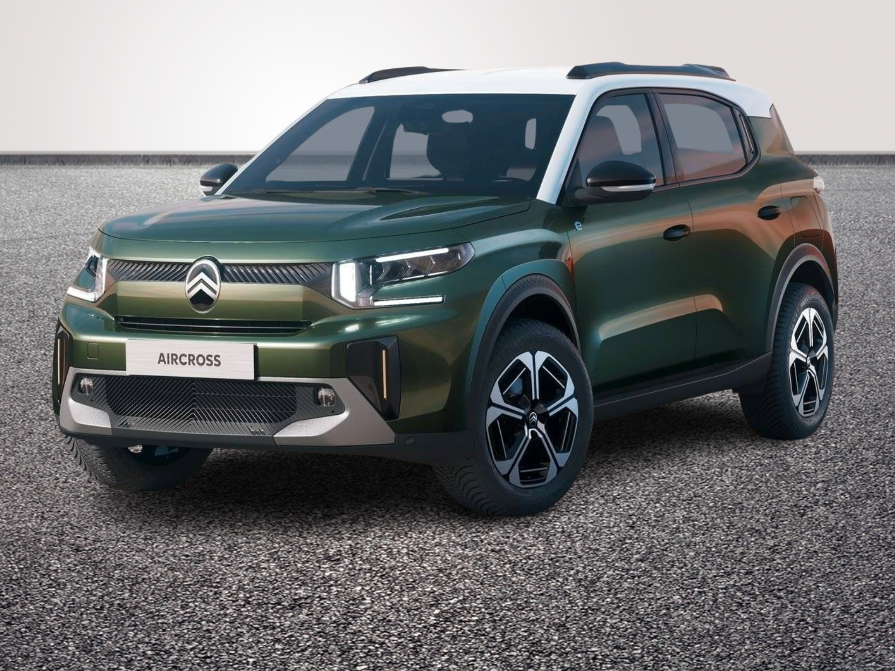
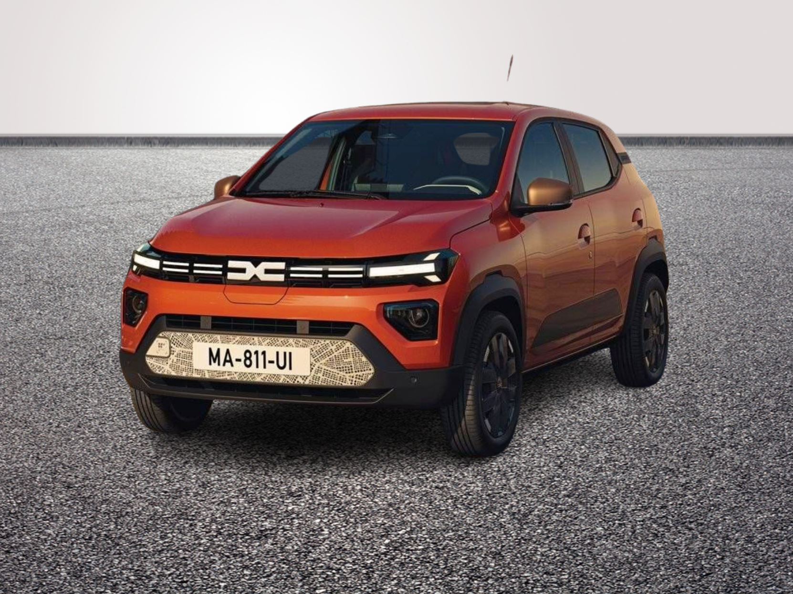
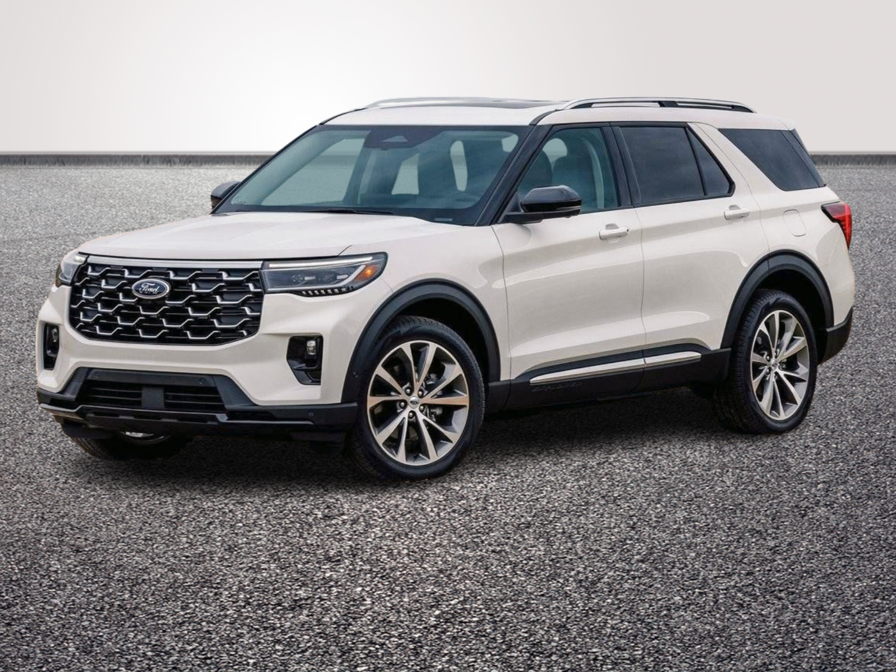

Consultez nos derniers véhicules




Découvrez les véhicules disponibles à la vente sur notre site à La Mézière et dénichez votre perle rare
Fondé il y a 10 ans dans la région bretonne, Cap Malo Automobiles est un garage spécialisé dans l’entretien, la réparation et surtout la vente de voitures. Notre équipe de professionnels passionnés et expérimentés met tout en oeuvre pour garantir la satisfaction de nos clients. Nous sommes fiers de proposer des services de qualité supérieure, en utilisant les technologies et les techniques les plus avancées dans notre domaine. Notre engagement envers la formation continue de notre personnel assure une expertise et une qualité de service constante. Chez Cap Malo Automobiles, nous sommes à l’écoute de nos clients et mettons tout en oeuvre pour offrir une expérience de conduite agréable et sécurisée.